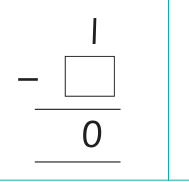
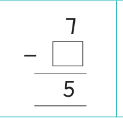
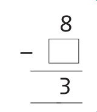
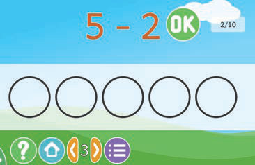
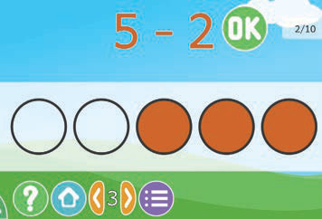

7.

8.

9.
Subtracting numbers by using ICT
Numbers can be subtracted by using ICT.
Example
5 - 2 =
Solution
Use the application in the TIE online library
https://tie.go.tz/pages/download-software to subtract the numbers.


Steps
1.
Open the application for subtracting numbers.
2.
Read / identify the question that appears on the screen clearly.
3.
Write the answer by shading the circles to represent the difference.
4.
Click OK to check your answer.
5.
Do the next questions to practice subtraction.